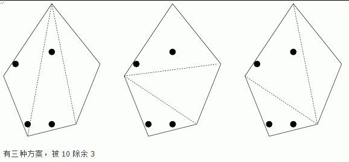

输入：第一行由空格隔开的3个整数n（4<=n<=600），k（2<=k<=20000），m(2<=m<=20000)，n表示牧场的顶点数，k表示羊的个数（保证为偶数）。接下来n行为顶点的坐标xi、yi，（-15000<=xi,yi<=15000）由空格隔开，接下来k行为羊的坐标，pi，pj，和xi，yi范围一样但是不会在顶点上，严格在牧场内。
Lyx的QQ牧场养了很多偶数个的羊，他是Vip，所以牧场是凸多边形（畸形）。现在因为他开挂，受到了惩罚，系统要求他把牧场全部分为三角形（划分线不能在牧场中相交，只能在顶点相交），羊也是有个性的，如果他们在三角形中是单数就会有羊自杀（Lyx的样就是畸形），这让Lyx很难办，于是他向你求助了。
输入：第一行由空格隔开的3个整数n（4<=n<=600），k（2<=k<=20000），m(2<=m<=20000)，n表示牧场的顶点数，k表示羊的个数（保证为偶数）。接下来n行为顶点的坐标xi、yi，（-15000<=xi,yi<=15000）由空格隔开，接下来k行为羊的坐标，pi，pj，和xi，yi范围一样但是不会在顶点上，严格在牧场内。
输出：牧场能划分的总方案数被m除的余数。
5 4 10
5 5
3 0
-1 -1
-3 4
1 10
1 0
-1 0
1 6
-2 5
3
